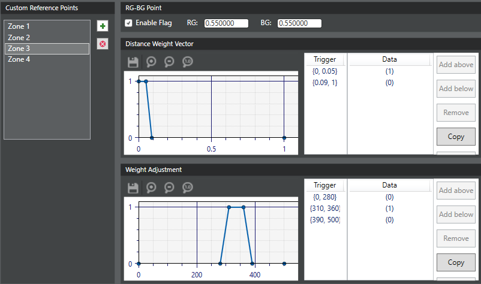

All custom reference points must be
added using this procedure.
-
In the left pane, click the AWB tab, then
click Custom Reference Points in the list.
-
In the Custom Reference Points panel, do one of the
following:
- Click on the words Zone 1 to set up the first
custom reference point.
- Click the last zone name, then click the plus sign (+) to add a subsequent
custom reference point.
-
In the RG-BG Point panel, select the Enable Flag check
box and add the coordinates of the custom reference point in the
RG: and BG: fields.
-
To set a distance weight trigger, do the following in the Distance Weight
Vector panel:
-
In the Trigger
column, double-click the {0, 0} entry to open the edit dialog. Update
the start and end values and click outside the box to save the
change.
-
In the Data column, double-click the (0) entry
to open the edit dialog. Update the weight value for this distance
trigger and click outside the box to save the change.
-
To add more triggers, use the Add above or Add below buttons to add a new blank trigger row.
Repeat the previous two substeps to set the trigger range and associated
weight value.

-
To set a lux index weight adjustment, do the following in the Weight Adjustment
panel:
-
In the Trigger
column, double-click the {0, 0} entry to open the edit dialog. Update
the start and end values and click outside the box to save the
change.
-
In the Data column, double-click the (0) entry
to open the edit dialog. Update the weight value for this distance
trigger and click outside the box to save the change.
-
To add more triggers, use the Add above or
Add below buttons to add a new blank trigger
row. Repeat the previous two substeps to set the trigger range and
associated weight value.
-
To adjust a trigger range or weight value, double-click the appropriate entry
to open the edit dialog. Update the value and click outside the box to save the
change.
-
Click to save changes.